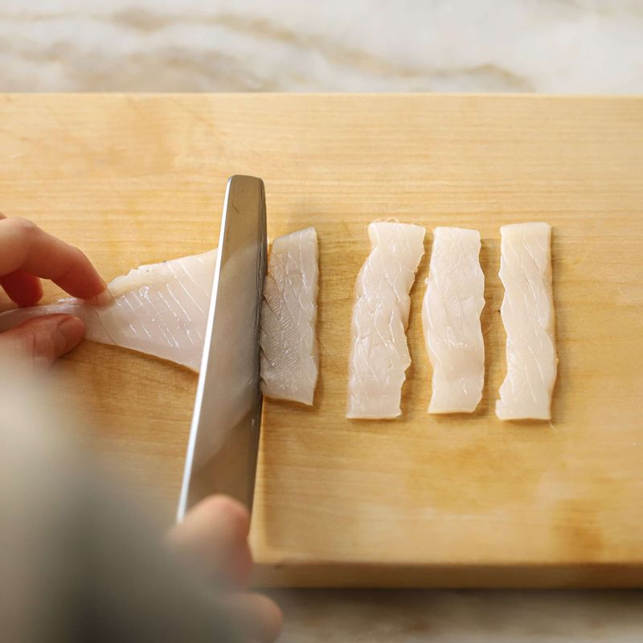
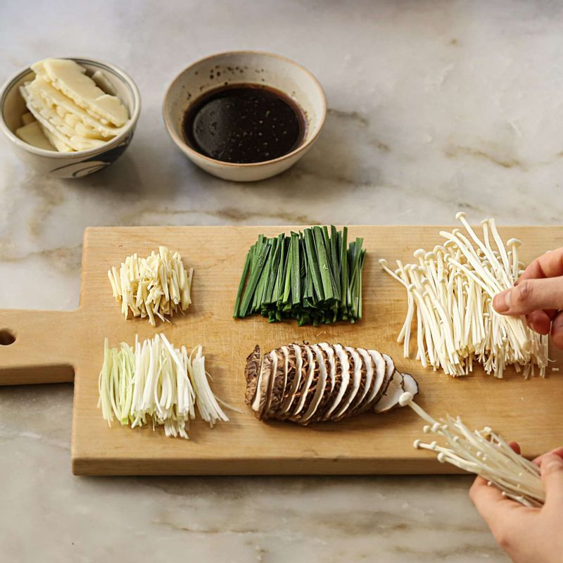
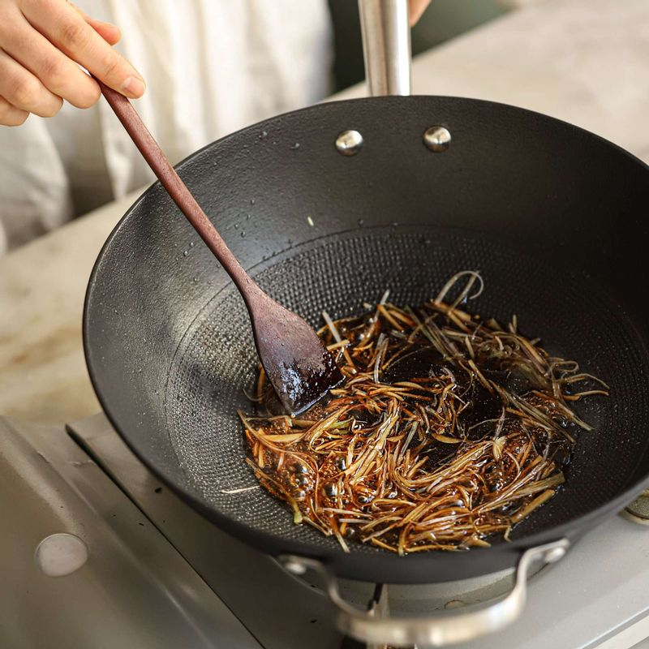
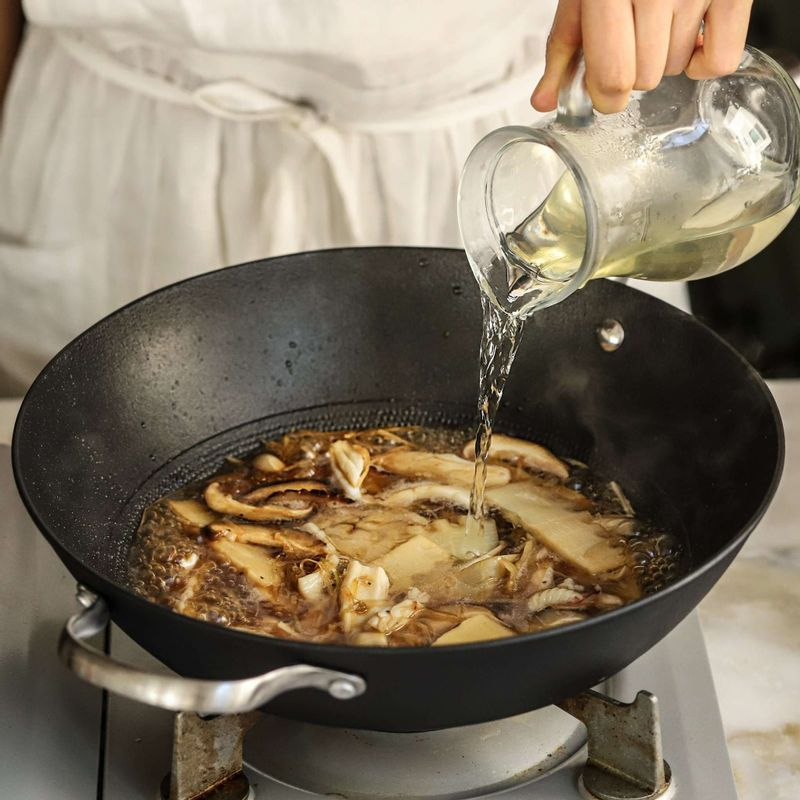
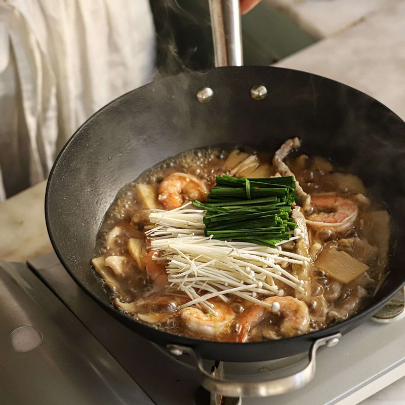

-

오징어는 껍질을 벗기고 칼집을 넣어 먹기 좋게 썰고,새우는 껍질을 벗기고 등부분에 칼집을 넣어 내장을 뺀 후 돼지고기와 함께 밑간 양념 재료에 버무려 밑간해주세요.
팬에 기름을 넉넉히 넣어 달군 후 돼지고기와 새우를 볶아 체에 밭쳐 기름을 빼 준비해주세요.
-

마늘과 대파, 표고버섯, 죽순은 채를 썰고, 팽이버섯은 밑동을 잘라내고 부추는 6센치 길이로 썰어주세요.
죽순과 표고, 오징어는 끓는 물에 살짝 데친 후 체에 밭쳐 물기를 빼주세요.
-

팬에 기름을 두르고 대파와 마늘 채를 넣어 볶다가 향이 올라오면 양념 소스 재료를 넣고 표고버섯과 죽순, 오징어를 넣어 볶아주세요.
-

뜨거운 다시마육수를 넣고 육수가 끓으면 돼지고기와 새우를 넣고 녹말물을 넣어 걸쭉하게 농도를 맞쳐주세요.
-

부추와 팽이버섯을 넣고 가볍게 섞고 마지막에 참기름을 넣은 후 불을 꺼주세요.
-
그릇에 밥을 담고 밥 위에 유산슬을 얹어 맛있게 즐겨주세요.